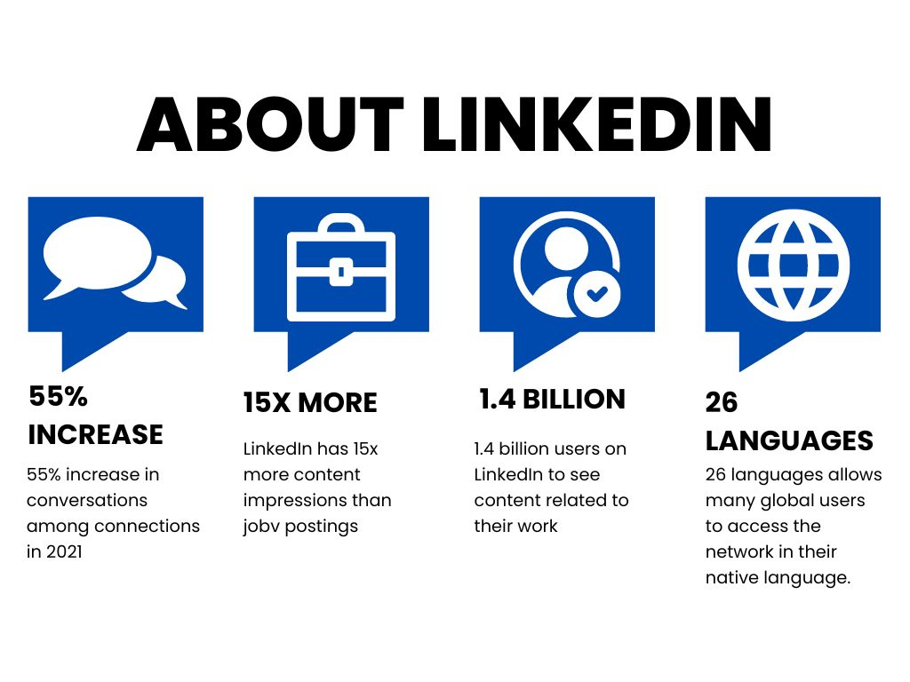

Linkedln
A social media site called LinkedIn was created with networking and career growth in mind. It is the biggest platform for business networking in the globe.

Main functions of LinkedIn
- Connecting users with other experts in their sector or specialty is LinkedIn's primary goal. To expand their professional network, individuals can interact with other individuals, including coworkers, future employers, and recruiters.
- Users of LinkedIn are able to establish a profile that highlights their qualifications, credentials, talents, and achievements in the workplace. Users may also add a profile picture, a description of their professional goals, and other pertinent data.
- Users of LinkedIn's job search function may look for job openings based on their field of expertise, geography, and other factors. Additionally, users of the portal can submit direct job applications.
- Users may interact with other professionals on LinkedIn through groups where they work in the same sector or have similar interests. Users may join groups to exchange ideas, pose queries, and connect with other industry experts.
Benefits that LinkedIn brings
- Users may connect on LinkedIn with other experts in their sector or business to expand their professional connections and meet new people.
- In order to assist users in advancing their careers, LinkedIn provides a variety of tools and services, such as job listings, career guidance, and online seminars through LinkedIn Learning.
- LinkedIn allows companies and organizations to promote their goods and services, advertise job openings, and interact with prospective clients and consumers through corporate pages.
- With a job search function that enables users to look for open positions according to their industry, region, and other criteria, LinkedIn has developed into a useful resource for job searchers. Additionally, users of the portal can submit direct job applications.
New Media